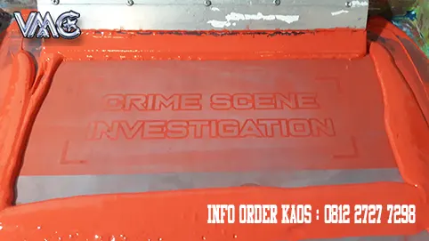
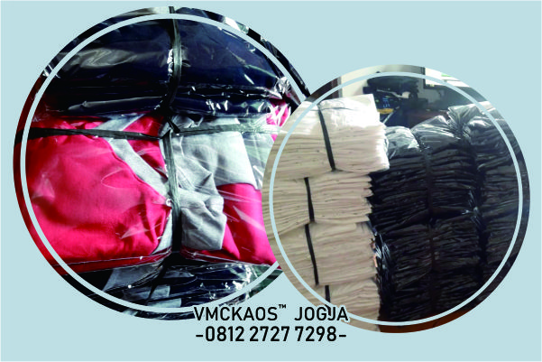
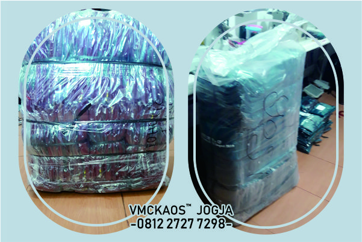
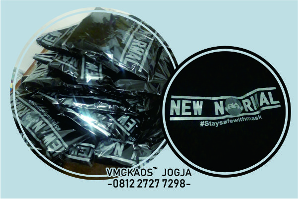
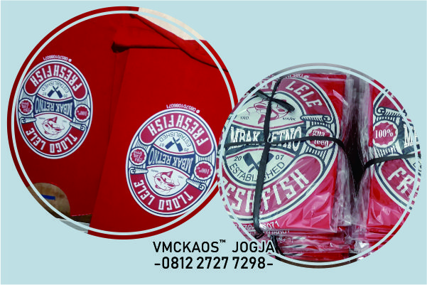

YANG WAJIB KAMU KETAHUI TENTANG JASA KONVEKSI
Ada banyak jenis jasa konveksi baju yang bisa kamu temukan saat ini. Jenis dari konveksi ini akan kami sebutkan lebih lengkap dalam isi artikel. Selain membahas mengenai jenis dari jasa konveksi pakaian, dalam artikel ini kamu juga akan mendapatkan banyak ulasan lain yang lengkap mengenai jasa konveksi naju. Apa saja hal penting yang perlu kamu ketahui dari jasa konveksi baju ini? Berikut ini adalah ulasannya.
Kaos Polo Bordir
Pengetahuan umum mengenai Jasa Konveksi
Apa itu jasa konveksi?
Jasa konveksi pakaian adalah salah satu jasa yang akan membantu kamu untuk memenuhi kebutuhan untuk menjahit pakaian. Ada jasa ini biasanya akan sangat berguna ketika kamu akan membuat pakaian dalam jumlah yang besar. Akan tetapi sesungguhnya jasa konveksi tidak hanya digunakan untuk membuat pakaian saja. Selain digunakan untuk membuat pakaian ada banyak jenis hal lainnya yang bisa dibuat dengan menggunakan jasa konveksi, mulai dari produk fashion lain seperti kaos, jaket hingga produk pelengkap fashion yang lainnya.
Selain jenis dari jasa konveksi yang sangat banyak, jasa konveksi juga bisa ditemukan dalam banyak skala. Artinya skala kecil dan skala besar. Masing-masing jenis dan skala dari jasa konveksi ini ranah kerja, kelebihan dan kekurangan masing-masing yang akan kami bahas lebih mendetail pada sub bab selanjutnya dalam artikel konveksi baju di bawah ini.
Jenis dari jasa konveksi
Seperti yang sudah disebutkan sebelumnya, jenis jasa konveksi ada sangat banyak. Apa saja?. Berikut ini adalah ulasannya.
1. Jasa konveksi kaos
Jenis yang paling umum untuk ditemukan adalah jenis jasa konveksi kaos. Jenis jasa konveksi kaos adalah jenis jasa konveksi pakaian yang biasanya lebih spesialis di bidang penjahitan kaos. Jasa ini memiliki perbedaan yang cukup signifikan dengan jasa lainnya. Biasanya sebuah jasa konveksi yang digunakan untuk membuat pakaian kaos ini memiliki modal yang lebih besar. Modal yang lebih besar ini disebabkan karena mesin yang digunakan dalam pembuatan 1 kaos tidak hanya 1 tapi lebih dari satu.
Penggunaan mesin jahit dalam pembuatan konveksi kaos ini memang lebih dari satu karena dalam pembuatan 1 kaos memang ada beberapa jenis jahitan yang mungkin akan kamu temukan. Untuk lebih lengkapnya mengenai jenis jahitan yang digunakan dalam pembuatan kaos ini akan dibahas lebih mendetail dalam sub bab selanjutnya.
2. Jasa Konveksi pakaian seragam
Jenis jasa konveksi selanjutnya adalah jasa konveksi seragam. Jasa konveksi ini merupakan sebuah jasa konveksi yang khusus digunakan untuk pembuatan pakaian seragam. Sesungguhnya ada juga kemungkinan bahwa kamu akan menemukan jasa konveksi yang membuat pakaian dengan jenis yang beragam contohnya konveksi pakaian kaos dan pakaian seragam jadi satu. Akan tetapi jika bisa carilah jasa konveksi yang memiliki satu spesialisasi kecuali jika skala dari jasa konveksi ini cukup besar.
Biasanya jasa konveksi pakaian seragam dengan jasa konveksi pakaian biasa memiliki kelebihan. Kelebihan yang dimilikinya adalah dari segi jenis bahan yang digunakan. Ketika kamu mencari bahan yang khusus digunakan untuk seragam mungkin tidak akan mudah kecuali memang kamu sudah bergelut dalam bidang tersebut. Di jasa konveksi pakaian seragam, kamu bisa mendapatkan bahan pakaian seragam dengan lebih mudah karena biasanya jenis bahan ini disediakan oleh jasa tersebut dan juga mendapatkan harga yang lebih murah karena jasa ini biasanya akan membeli bahan dalam jumlah besar.
3. Konveksi pakaian harian
Selanjutnya adalah jenis konveksi pakaian harian. Jenis konveksi pakaian harian merupakan salah saat jenis konveksi pakaian yang digunakan untuk membuat pakaian harian. Biasanya jenis konveksi ini bisa ditemukan dalam jenis jasa konveksi pakaian bayi, jasa konveksi pakaian anak dan juga jasa konveksi pakaian dewasa.
Dari jenis jasa konveksi pakaian ini yang cukup populer belakangan ini adalah jasa konveksi pakaian dewasa untuk wanita. Saat ini banyak wanita yang sangat peduli dengan penampilannya hal inilah yang membuat jasa konveksi baju wanita dewasa menjadi makin maju. Salah satu produk dari jasa konveksi pakaian wanita dewasa yang cukup populer belakangan ini adalah pakaian gamis dan juga jilbab.
4. Konveksi merchandise
Jenis jasa konveksi selanjutnya yang akan kami kenalkan adalah jasa konveksi merchandise. Jasa konveksi merchandise adalah jasa yang digunakan dalam pembuatan merchandise yang umumnya digunakan untuk pelengkap promo. Contoh dari barang merchandise yang dibuat dalam konveksi ini seperti topi dan juga barang promosi lain seperti tas.
Skala bisnis konveksi
Selain memiliki jenis yang banyak, skala bisnis jasa konveksi pakaian juga beragam seperti yang sudah disebutkan sebelumnya. Untuk skala bisnis jasa konveksi pakaian ini dibagi menjadi 2 yaitu :
1. Bisnis konveksi skala rumahan
Skala bisnis jasa konveksi pakaian rumahan merupakan jasa konveksi pakaian yang memiliki skala bisnis yang masih dalam level rumah. Biasanya ditandai dengan jumlah pekerja yang lebih kecil dan memiliki manajemen yang kurang profesional. Jasa ini biasanya menawarkan harga yang lebih mahal karena mereka membuat dalam skala lebih kecil. Selain itu, jasa konveksi pakaian rumahan juga belum memiliki manajemen yang baik sehingga mungkin akan kelabakan ketika menerima order dalam jumlah yang banyak dengan konsumen yang berbeda-beda. Bisnis konveksi skala besar
Selanjutnya jasa konveksi baju selanjutnya adalah jasa konveksi pakaian dalam skala besar. Jasa ini memiliki manajemen yang lebih baik sehingga standar harga dan juga standar layanan berlaku. Kelebihannya adalah jasa konveksi pakaian yang seperti ini memiliki kemampuan untuk menata pekerjaan mereka sehingga dapat membuat pengerjaan pakaian selesai tempat waktu sesuai dengan yang dijanjikan.
Biasanya jasa konveksi pakaian yang besar sudah berkecimpung dalam dunia konveksi cukup lama sehingga memiliki lebih banyak keunggulan dibandingkan dengan jasa konveksi pakaian dengan skala rumahan. Terkadang jasa konveksi pakaian yang besar juga tidak mengerjakan pakaian order mereka sendiri, tapi menggunakan vendor untuk membuat pekerjaan mereka menjadi lebih rapi dan lebih berkualitas. Hal ini merupakan salah satu bentuk manajemen yang baik dari sebuah jasa konveksi pakaian dengan skala yang besar.
Hal yang menentukan biaya jahit konveksi
Untuk kamu yang akan membuat pakaian dengan menggunakan jasa konveksi pakaian, maka pastikan kamu menggunakan jasa yang tepat untuk pengerjaan jahitan pakaian anda. Akan tetapi selain menentukan jasa konveksi yang akan kamu gunakan, perhatikan juga mengenai biaya yang akan kamu keluarkan dalam pembuatan pakaian tersebut.
Sebuah pakaian yang dibuat dengan menggunakan jasa konveksi pakaian yang satu dan yang lainnya akan memiliki harga yang berbeda. Perbedaan harga yang terjadi dalam pembuatan pakaian pada jasa konveksi pakaian ini dipengaruhi oleh beberapa hal. Apa saja?
2. Model pakaian yang dibuat
Ada jasa konveksi pakaian yang membuat pakaian dengan biaya yang di pukul rata. Akan tetapi ada juga jasa konveksi pakaian yang membuat menetapkan biaya pembuatan pakaian berdasarkan model pakaian yang akan dibuat. Jika kamu akan membuat pakaian dengan menggunakan jasa konveksi pakaian skala kecil, maka model pakaian yang akan dibuat memang akan sangat menentukan harga. Tapi jika kamu menggunakan jasa konveksi pakaian yang besar, maka masalah model mungkin tidak akan begitu besar pengaruhnya.
3. Kuantitas pakaian yang dibuat
Selanjutnya hal yang mempengaruhi harga pembuatan pakaian pada jasa konveksi baju adalah mengenai kuantitas pakaian yang akan di buat. Kuantitas pakaian adalah salah satu hal yang sangat menentukan dalam pembuatan pakaian. Makin banyak jumlah pakaian yang kamu buat, maka akan makin murah harga satuan dari pakaian tersebut.
4. Warna pakaian
Dalam pembuatan pakaian dengan jumlah yang besar, maka warna pakaian juga akan menentukan seberapa mahal harga jahit dari sebuah pakaian. Meskipun kamu membuat 1.000 pakaian dengan model sama tapi jika warna kain yang digunakan ada 5 jenis. Contohnya model A dengan varian warna Merah, Kuning, Tosca, Biru dan Abu, maka biaya yang digunakan dalam pembuatan tiap pakaian akan lebih mahal dibandingkan jika kamu hanya menggunakan 1 varian saja. Hal ini disebabkan karena untuk membuat pakaian dengan varian warna pihak jasa konveksi pakaian pasti membutuhkan biaya lebih banyak dalam pembelian benang pakaian.
5. Sistem yang digunakan memberikan harga
Selanjutnya salah mengenai sistem yang digunakan oleh jasa konveksi pakaian dalam menentukan harga. Sistem ini yang digunakan dalam pembuatan pakaian pada jasa konveksi pakaian memang beda antara satu konveksi dengan konveksi yang lainnya. Perbedaan dalam sistem harga ini dapat menentukan kualitas jahitan dan juga hal-hal lainnya.
6. Skala dari konveksi yang digunakan
Seperti yang sudah disebutkan sebelumnya, skala dari sebuah jasa konveksi pakaian ada 2 macam yaitu skala rumahan dan juga skala besar. Untuk konveksi dengan skala rumahan biasanya akan memberikan harga yang lebih mahal dibandingkan dengan jasa konveksi pakaian dengan skala yang lebih besar.
JASA KONVEKSI KAOS
Pada bab sebelumnya, kami sudah membahas mengenai jenis-jenis dari jasa konveksi pakaian yang mungkin akan kamu temukan. Dalam bab ini kami akan menjelaskan lebih detail mengenai jasa konveksi pakaian dalam bentuk kaos yang bisa kamu temukan di sekitar anda.
Cara memilih konveksi kaos yang berkualitas
Untuk pengertiannya, jasa konveksi pakaian kaos adalah sebuah jasa konveksi pakaian yang memiliki spesialisasi dalam pembuatan kaos. Salah satu informasi yang penting yang kamu butuhkan mengenai jasa konveksi kaos ini adalah cara memilih jasa konveksi kaos yang berkualitas. Lalu bagaimana cara memilih jasa konveksi pakaian kaos yang berkualitas ini? Berikut ini adalah ulasannya.
1. Perhatikan jenis jahitan yang digunakan
Salah satu hal yang wajib diperhatikan mengenai pemilihan sebuah jasa konveksi pakaian kaos adalah mengenai jahitan yang dimilikinya. Sebuah jasa yang memiliki jahitan yang berkualitas menandakan bahwa jasa tersebut memiliki orientasi pada konsumen, bukan hanya pada keuntungan saja. Untuk mengetahui kualitas jahitan dari jasa konveksi pakaian kaos yang terbaik, maka kami akan membahasnya secara lebih rinci dalam sub bab selanjutnya.
2. Perhatikan bahan kaos yang disediakan
Selanjutnya adalah mengenai bahan kaos yang akan digunakan. Bahan yang digunakan untuk membuat kaos ada banyak sekali. Ada Cotton combed, ada Cotton carded dan masih banyak lagi yang lainnya. Sebuah jasa konveksi pakaian kaos yang berkualitas dan memiliki skala besar pasti menyediakan bahan kaos untuk anda. Oleh karena itu, kamu bisa menggunakan bahan kaos yang disediakan oleh jasa tersebut atau bisa membawanya sendiri. Tidak hanya mampu menyediakan bahan kaos yang bervariasi saja, bahan kaos yang disediakan oleh jasa konveksi pakaian seharusnya memang bahan kaos yang berkualitas tinggi.
3. Model kaos yang bisa dibuat
Etika kamu akan menggunakan sebuah jasa konveksi pakaian pastikan jasa yang akan kamu gunakan tidak hanya bisa membuat kaos dengan 1 mode saja. Pastikan jasa tersebut bisa juga membuat kaos dengan ragam model baik modal yang sudah populer maupun model anti mainstreem yang kamu buat sendiri. Sebuah jasa yang bisa membantu kamu untuk membuat kaos dengan model yang sesuai dengan desain kamu biasanya merupakan jasa pembuatan kaos yang lebih profesional dan besar.
4. Perhatikan hasil yang sudah pernah yang dibuat
Selanjutnya adalah mengenai hasil jahitan kaos yang pernah dibuatnya. Ketika kamu akan memilih sebuah jasa konveksi pakaian kaos sebaiknya kamu memilih jasa ini dengan cara langsung. Mencari jasa konveksi baju dengan menggunakan media online adalah salah satu hal yang sangat boleh untuk dilakukan, akan tetapi selain melihat secara online pastikan jasa konveksi pakaian kaos yang akan kamu gunakan juga bisa kunjungi secara offline. Jika bisa kamu bisa datang ke jasa konveksi pakaian kaos tersebut untuk melihat sendiri kualitas dari hasil kaos yang pernah dibuatnya. Dari sini kamu bisa melihat hasil sablonan dan juga hasil jahitan yang dimiliki oleh jasa konveksi pakaian kaos tersebut.
5. Perhatikan jasa yang ditawarkannya
Makin banyak jasa yang bisa ditarakan pada kamu, maka makin baik. Tapi ingat, jasa yang ditawarkan oleh sebuah jasa konveksi pakaian kaos yang profesional haruslah jasa seputar pembuatan kaos. Misalnya layanan untuk membuat kaos, membuat desain kaos, membuat desain sablonan dan lain-lainnya.
Jenis jahitan konveksi
Salah satu hal yang sangat penting dalam pembuatan sebuah kaos adalah mengenai jahitannya. Sebelum masuk ke hal-hal yang berhubungan dengan penentuan kualitas jahitan dari jasa konveksi pakaian kaos yang baik, kita masuk dahulu pada jenis jahitan ya dibutuhkan dalam pembuatan sebuah kaos. Apa saja jenis jahitan yang digunakan dalam jasa konveksi pakaian kaos yang profesional? Berikut ini adalah ulasannya.
1. Jahitan obras
Jahit obras adalah jenis jahitan yang digunakan untuk menggabungkan potongan kain bagian dalam dari pakaian. Penggunaan jenis jahitan ini digunakan untuk menjaga sisa kain dalam pakaian tidak mudah lepas seratnya.
2. Jahitan overdeck
Selanjutnya yang akan dibahas adalah jenis jahitan overdeck. Jenis jahitan ini dibuat dengan menggunakan mesin overdeck yang berkecepatan tinggi. Jenis jahitan ini digunakan untuk membuat jahitan pada lengan bawah dan juga leher kaos. Hasil dari jahitan ini dari atas terlihat seperti jahitan dengan 2 benang yang sejajar sedangkan bagian dalam seperti jahitan obras.
3. Jahitan rantai
Jahitan rantai merupakan salah satu jahitan yang digunakan untuk menghubungkan pundak kaos hingga bagian belakang leher.
Pada dasarnya untuk membuat sebuah kaos dibutuhkan 3 jenis jahitan tersebut. Jika kamu menggunakan jasa konveksi pakaian kaos yang berkualitas, maka secara otomatis kaos kamu akan dikerjakan dengan menggunakan 3 jenis jahitan ini. Akan tetapi jika kamu menggunakan jasa konveksi pakaian kaos yang kurang profesional, maka kemungkinan semua jahitan pada kaos akan menggunakan tipe jahitan yang sama. Hal ini disebabkan karena jasa konveksi pakaian kaos yang kurang profesional tidak mau mengeluarkan modal yang banyak dalam produksinya dan ingin memaksimalkan keuntungan dari pembuatan kaos ini.
Penggunaan jahitan yang tidak lengkap oleh jasa konveksi baju kaos kamu merupakan salah satu hal yang perlu dihindari. Karena selain menyebabkan tampilan dari kaos kamu kurang menarik, bagian-bagian ya harusnya dijahit dengan jahitan berbeda akan kurang kuat.
Menentukan kualitas dari jahitan konveksi kaos
Dalam sub bab sebelumnya sudah dijelaskan mengenai jenis dari jahitan yang dibutuhkan dalam pembuatan kaos bukan? Selain memiliki 3 jenis jahitan ini, untuk memastikan sebuah jasa konveksi pakaian kaos memiliki jahitan yang baik bisa dilihat dari beberapa aspek berikut ini.
- Jahitan tidak terputus
- Jarak antar jahitan tidak lebar dan konstan
- Jika ada sambungan, maka sambungan sambungan rapi dan sejalur
- Menggunakan benang seusai kebutuhan, seperti penggunaan benang obras khusus untuk bagian dalam
Jenis sablonan untuk kaos dari konveksi kaos

Selain dilihat dari kualitas kaosnya, sebuah jasa konveksi baju kaos yang berkualitas atau tidak juga bisa dilihat dari jenis dan kualitas sablonan yang dimilikinya. Ya, sebagai informasi bagi anda, jenis sablonan ya bisa digunakan untuk membuat kaos ada cukup banyak jumlahnya. Berikut ini adalah beberapa jenis sablonan paling populer yang banyak digunakan dalam pembuatan kaos. Apa saja? Berikut ini ulasannya.
1. Sablon karet
Salah satu jenis sablon yang sangat populer digunakan dalam dunia jasa konveksi pakaian adalah sablon karet. Jenis sablon ini merupakan sablon yang paling populer. Pasalnya jenis sablon ini memiliki kelebihan dari tingkat tingkat lekatannya yang baik, sifatnya yang lebih elastis, dan juga bahan tintanya yang lebih murah.
2. Sablon plastisol
Selanjutnya jenis sablonan kedua yang bisa kamu gunakan untuk pakaian kaos kamu adalah sablon plastisol. Jenis sablon ini merupakan jenis sablon yang digunakan dalam skala internasional. Jenis sablon ini sangat populer karena ia memiliki kelebihan dari segi warna cerah yang digunakannya. Sayangnya jenis sablon ini tidak cukup tahan terhadap panas. Hal ini menyebabkan sablon ini memiliki harus di setrika dari bagian dalam.
3. Sablon DTG
Jenis sablon selanjutnya adalah jenis sablon DTG. Jenis sablon ini adalah sablon yang cukup populer belakangan ini karena dapat dibuat dengan sistem satuan. Ia bisa di buat dengan biaya yang murah meski pembuatannya tidak dalam jumlah yang besar. Selain itu juga lebih cepat karena dibuat dengan menggunakan digital printer.
4. Sablon flocking
Selanjutnya adalah jenis sablon flocking. Jenis sablon ini merupakan jenis sablon yang akan membuat penampilan pakaian kamu terlihat mewah. Pasalnya, jenis sablon ini memiliki hasil yang berbulu atau beludru. Biasanya pembuatan dari sablon ini tidak dilakukan dengan menggunakan tinta tapi dilakukan dengan menggunakan serbuk warna.
5. Sablon GITD
GITD adalah singkatan dari Glow In The Dark. Jenis sablonan ini akan menyala di dalam kegelapan. Kemampuan dari jenis sablonan ini untuk menyala di kegelapan disebabkan karena dalam pembuatannya ia menggunakan tinta dengan campuran fosfor.
6. Sablon discharge
Salah satu jenis sablon yang sangat populer adalah sablon discharge. Jenis sablon ini merupakan jenis sablon yang tidak mudah hilang ataupun luntur. Jenis sablon ini akan meresap ke dalam kain pada saat di aplikasikan sehingga dapat bertahan lebih lama. Sayangnya karena ia meresap ke dalam serat kain hasil warna yang dimilikinya menjadi kurang cerah seperti warna tinta sebelum diaplikasikan.
7. Sablon foil
Salah satu sablon yang memberikan efek kemewahan lainnya adalah sablon foil. Sablon foil ini memberikan kesan kilap seperti logam dengan warna emas atau perak.
8. Sablon foam
Merupakan salah satu jenis sablon yang memberikan efek timbul pada kain. Jenis sablon ini sangat cocok digunakan pada bahan katun. Hasil dari sablon foam ini sangat menarik. Sayangnya karena sifatnya, sablon foam ini tidak bisa digunakan untuk membuat efek gradasi.
Kualitas sablonan pada jasa konveksi kaos

Jenis dari sablon yang disebutkan sebelumnya hanyalah beberapa dari jenis sablon dan yang merupakan jenis sablon terbaik kamu paling populer. Akan tetapi jika akan menggunakan jenis sablon dari konveksi baju yang disebutkan di atas, pastikan kamu mengetahui lebih dahulu kualitas sablonan yang bisa kamu dapatkan pada jasa konveksi pakaian. Sebuah jasa konveksi pakaian kaos yang memiliki sablonan yang berkualitas memiliki ciri seperti berikut ini.
Sablonan tidak mudah luntur
Tidak terlalu tebal tapi kuat, jika terlalu tebal mudah pecah
Bisa minta dengan ragam tipe sablonan seperti yang disebutkan sebelumnya
Memiliki warna yang menutup atau tingkat coverage tinggi
Jasa Konveksi pakaian seragam
Selain jasa konveksi kaos, salah satu jenis jasa konveksi baju lain yang cukup populer adalah jasa konveksi seragam. Jasa konveksi seragam adalah sebuah jasa yang memiliki spesialisasi dalam pembuatan seragam. Seragam yang dibuat bisa saja seragam sekolah atau bahkan seragam untuk perkantoran. Untuk kamu yang ingin menggunakan jasa konveksi seragam ini, berikut ini adalah beberapa informasi yang mungkin kamu perlukan.
1. Cara memilih konveksi pakaian seragam yang berkualitas
Sebagai salah satu jasa yang dibutuhkan untuk keperluan orang banyak, memilih sebuah jasa konveksi seragam merupakan salah satu hal yang penting untuk dilakukan. Pastikan kamu memilih jasa konveksi seragam yang baik dan berkualitas dengan melihat beberapa faktor berikut ini.
2. Perhatikan spesialisasi
Salah satu hal yang sangat penting untuk dilakukan ketika kamu akan memilih sebuah jasa konveksi seragam adalah mengenai spesialisasinya. Dalam sub bab yang sebelumnya sudah disebutkan bahwa dalam prakteknya, kamu mungkin akan menemukan jasa konveksi yang memiliki banyak jenis layanan. Mulai dari layanan pembuatan merchandise hingga layanan dalam pembuatan pakaian. Akan tetapi jika kamu akan membuat sebuah pakaian seragam sebaiknya pilih jasa yang memiliki spesialisasi dalam pembuatan seragam. Hal ini akan membantu kamu untuk membuat produk seragam yang lebih baik dan lebih berkualitas.
3. Lihat skala konveksi
Selanjutnya hal lain yang perlu diperhatikan adalah mengenai skala konveksi yang akan kamu gunakan. Seperti yang sudah disebutkan sebelumnya, ada 2 jenis jasa konveksi seragam yang akan kamu temukan yaitu konveksi skala kecil dan konveksi skala besar. Jika kamu akan membuat pakaian seragam dalam jumlah banyak untuk kantor kamu, maka akan lebih baik bagi kamu untuk menggunakan jasa konveksi seragam yang memiliki skala yang lebih besar sehingga akan lebih banyak keuntungan yang bisa didapatkan? Apa saja keuntungannya? Tentu kamu yang membaca lengkap artikel ini pasti sudah memahaminya bukan?
4. Perhatikan konsumen yang sudah menggunakan jasanya
Selanjutnya adalah mengenai konsumen yang sudah menggunakan jasanya. Sebuah jasa konveksi seragam yang berkualitas pasti sudah memiliki cukup banyak konsumen bukan? Jika konsumen yang menggunakan jasa mereka adalah konsumen yang memiliki level yang tinggi artinya, jasa konveksi seragam yang kamu temukan adalah jasa konveksi seragam yang profesional.
5. Lihat antriannya
Salah satu hal yang cukup menarik untuk diperhatikan ketika akan menggunakan sebuah jasa konveksi seragam adalah mengenai antriannya. Bukan panjang pendeknya tapi dari kesesuaian skalanya. Jika kamu menggunakan jasa konveksi seragam yang memiliki skala besar pasti sudah jelas mereka akan memiliki antrean yang panjang. Akan tetapi jasa konveksi seragam yang profesional dan memiliki skala yang besar pasti sudah memiliki manajemen yang baik sehingga meski antriannya panjang mereka bisa memberikan estimasi waktu yang tepat untuk pengerjaan tugas mereka.
6. Garansi
Oh ya, ketika kamu akan menggunakan jasa konveksi baju seragam pastikan kamu memiliki jaminan berupa garansi. Jaminan garansi yang dimaksudkan adalah jaminan garansi bahwa jasa yang akan kamu gunakan mampu menyelesaikan pakaian tepat waktu dan mampu menghasilkan produk dengan kualitas sesuai dengan yang dijanjikan. Jika tidak ada hal yang tidak tepat, maka kamu bisa menagih janji dari segi garansi ini.
Memilih jasa konveksi online

Untuk menggunakan jasa konveksi seragam kamu bisa menggunakan jasa konveksi seragam yang offline ataupun yang online. Ketika kamu memilih menggunakan jasa konveksi seragam yang online, maka kamu perlu memperhatikan hal yang disebutkan dalam sub bab sebelumnya dan juga beberapa hal tambahan berikut ini. Apa saja? Berikut ini ulasannya.
1. Perhatikan mengenai bukti kerjanya
Ketika kamu menggunakan sebuah jasa konveksi seragam, maka jasa konveksi seragam yang akan kamu gunakan harus memiliki bukti kerja. Artinya ada testimoni mengenai hasil kerja mereka. Selain memperhatikan testimoni, perhatikan juga apakah bukti kerja tersebut otentik atau tidak. Pastikan jika bukti kerja yang dimiliki bukan merupakan bukti kerja yang abal-abal atau hanya mengambil dari hasil kerja jasa konveksi seragam yang lain.
2. Lihat desain website
Sebuah jasa konveksi seragam yang profesional pasti tahu bahwa tepercaya satu tidak jasa mereka dapat direpresentasikan dengan desain website yang mereka miliki. Sebuah jasa yang profesional dan terpercaya pasti akan memiliki desain website yang baik dan bermodal. Tidak hanya menggunakan platform gratis seperti wordpress.
3. Lihat kinerja customer service
Coba hubungi customer service pastikan customer service menangani kamu dengan profesional. Jika customer service tidak menangani dengan profesional, maka bisa jadi jasa tersebut bukan jasa konveksi seragam yang profesional.
4. Pastikan ada kantor official
Hal paling penting ketika kamu akan memilih jasa konveksi baju online adalah memastikan jasa tersebut memiliki kantor official.
Jenis bahan untuk seragam konveksi
Setelah mengetahui jasa konveksi seragam mana yang akan kamu gunakan, maka hal lain yang tidak kalah penting digunakan untuk memastikan kamu puas dengan hasil kerja dari sebuah jasa konveksi seragam adalah dengan mengetahui jenis bahan yang mungkin akan kamu gunakan dalam pembuatan seragam anda. Ada berapa jenis bahan yang bisa kamu gunakan untuk membuat seragam, apa saja? Berikut ini adalah ulasannya.
1. Bahan dril
Jenis bahan dril merupakan salah satu jenis bahan yang sangat populer digunakan dalam pembuatan seragam. Bahan ini populer baik digunakan dalam pembuatan seragam sekolah atau bahkan seragam perkantoran. Mengapa paling banyak dipilih dan digunakan karena beberapa alasan. Mulai dari bahannya yang tebal dan juga kekuatan yang dimilikinya.
Bahan dril memang memiliki ciri khas tebal sehingga lebih tahan lama dan kuat. Bahan ini memiliki ciri lain berupa permukaan bergaris, memiliki kilau dan juga cenderung tahan kusut. Jenis dari bahan ini bisa dibuat dari material yang beragam. Ada yang dibuat dari bahan katun, linen atau bahkan dari serat sintetis. Untuk bahan dril yang dibuat dari serat sintetis sudah pasti memiliki bahan yang agak panas. Jadi jika kamu akan menggunakan bahan ini untuk membuat baju seragam, pastikan jasa konveksi baju seragam kamu memiliki bahan dril yang terbuat dari bahan yang alami dan dingin seperti katun dan linen.
2. Bahan acrylic
Selanjutnya adalah jenis bahan acrylic. Jenis bahan ini merupakan jenis serat sintetis. Jenis bahan ini memiliki ciri yang mirip dengan kain wol, hanya saja dibuat dengan menggunakan bahan yang sintetis. Ia memiliki karakter yang lembut dan sangat cocok digunakan untuk membuat pakaian dalam bentuk jasa. Cocok digunakan untuk bahan seragam untuk dalam ruangan yang ber-AC karena memiliki sifat sebuah isolator panas. Jadi ia dapat menahan panas dari luar agar tidak masuk ke dalam dan juga menahan panas menahan panas tubuh dari dalam agar tidak ke luar.
Kelebihan lain dari bahan ini adalah ia memiliki sifat lembut sehingga tidak menyebabkan rasa gatal dan juga tahan kusut. Jika kamu ingin menggunakan bahan ini, maka pastikan jasa konveksi baju seragam yang kamu gunakan adalah jasa yang profesional dan berpengalaman karena tidak semua jasa konveksi seragam memilikinya.
3. Cashmere
Bahan yang bisa digunakan dalam pembuatan seragam selanjutnya adalah bahan cashmere. Bahan ini merupakan bahan alami yang dibuat dari bulu kambing dari Kashmir. Bahannya yang tepat membuat bahan ini cocok digunakan untuk membuat pakaian jas. Jenis kain ini sangat populer untuk digunakan pada konveksi baju di daerah yang dingin.
4. Poliester atau PE
Bahan PE adalah bahan serat sintetis, ia dibuat dengan menggunakan salah satu hasil dari minyak bumi. Merupakan bahan yang paling buruk digunakan untuk membuat seragam luar ruangan karena sangat panas. Bahan ini akan lebih baik digunakan untuk membuat jaket kantor sehingga dapat membantu menghangatkan diri pada cuaca yang dingin. Biasanya jasa konveksi baju seragam juga menyediakan bahan ini dengan lapisan anti air sehingga makin cocok digunakan untuk membuat jaket.
5. Bahan kanvas
Merupakan bahan yang memiliki ciri tebal, bahan ini nyaman digunakan. Dan meski memiliki ciri tebal tapi bahan dari jasa konveksi baju seragam ini tidak membuat kamu merasa kepanasan karena dibuat dengan menggunakan bahan alami.
Ciri jahitan konveksi seragam yang baik

Selain memilih jenis bahan yang akan digunakan dalam pembuatan seragam, kamu juga wajib memperhatikan jahitan dari sebuah jasa konveksi seragam agar bisa mendapatkan seragam yang berkualitas. Lalu bagaimana ciri dari jahitan seragam yang baik? Berikut ini adalah ulasannya.
- Jenis benang yang digunakan
Bicara mengenai benang jahit, kita bisa menemukan benang jahit dalam banyak jenis. Ada yang memiliki ukuran yang tipis dan ada juga yang memiliki ukuran yang tebal. Sesungguhnya untuk pemilihan ini disesuaikan dengan bahan yang akan digunakan. Akan tetapi jika bicara mengenai pakaian seragam, biasanya bahan yang dipilih dalam pembuatannya adalah bahan yang tebal. Oleh karena itu, jika bahan yang digunakan tebal, maka pastikan benang jahit yang digunakan dalam pembuatan seragam juga tebal.
- Panjang tiap jahitan
Sebuah pakaian dibuat dengan menggunakan jahitan demi jahitan. Sebuah jasa konveksi seragam yang profesional harus berorientasi pada konsumen sehingga mereka tidak akan membuat jahitan yang buruk. Jahitan yang buruk bisa dilihat dari jahitan yang terlalu panjang. Tiap jahitan yang terlalu panjang membuat ikatan antar kain satu dengan kain lainnya menjadi tidak kuat.
- Perhatikan bagian sambungan
Sebuah jasa konveksi baju yang berkualitas membuat sambungan dengan kualitas. Sambungan dilakukan dengan sejajar dan rapi. Jahitan juga tidak berbelok-belok meski ketebalan kain ya dijahit berbeda.
Memilih jasa Konveksi untuk pekerjaan Jahitan anda.
Dari ulasan di atas, ketika kamu akan memilih baik konveksi baju kaos ataupun ragam, maka kamu perlu memperhatikan beberapa hal berikut ini.
- Memastikan kualitas dari order sebelumnya
- Memastikan jasa bisa menangani order secara profesional
- Mengetahui kualitas customer service
Kualitas customer service yang buruk bisa membuat komunikasi tidak efektif yang menyebabkan kecelakaan produksi
Selain memperhatikan kualitas seperti di atas kamu juga perlu menghindari beberapa kesalahan yang banyak dilakukan orang dalam memilih jasa konveksi seragam. Apa saja kesalahan tersebut?
Kurang riset
Tidak melihat hasil jahitan asli
Tidak membuat sampel terlebih dahulu
Membedakan jasa Konveksi, jasa jahit rumahan, jasa garmen dan jasa maklon
Seperti yang sudah disebutkan sebelumnya, konveksi adalah sebuah jasa yang membantu kamu untuk membuat kain menjadi sebuah pakaian jadi. Sayangnya jenis jasa sesungguhnya tidak hanya jasa konveksi baju saja. Selain ada jasa konveksi pakaian, ada juga jasa jahit rumahan, jasa garmen dan juga jasa maklon. Apa perbedaan dari jasa-jasa ini? Berikut ini adalah ulasannya.
Perbedaan konveksi dengan penjahit rumahan

Hal pertama yang akan kami bahas adalah perbedaan antara jasa konveksi pakaian dengan jasa penjahit rumahan. Dalam sub bab sebelumnya kita sudah membahas mengenai adanya jasa konveksi pakaian dengan skala rumahan. Rajasa jasa konveksi pakaian dengan skala rumahan berbeda dengan jasa penjahit rumahan. Keduanya dibedakan dengan beberapa hal berikut ini.
1. Jumlah order
Dalam jasa konveksi pakaian jumlah order yang dilakukan adalah lebih dari 10 pcs hingga 10.000 pcs. Sedangkan pada jasa penjahit rumahan order hanya dilakukan di bawah jumlah 10 pcs saja.
2. Harga jahit.
Karena jumlah jahit lebih sedikit, maka hal ini menyebabkan biaya jahit di jasa penjahit rumahan menjadi lebih mahal dibandingkan dengan jasa konveksi pakaian.
Perbedaan konveksi dengan garmen
Lalu apa perbedaan antara jasa konveksi pakaian dengan jasa garmen? Keduanya berbeda dari segi skala. Untuk jasa garmen skala yang dimilikinya sudah sangat besar. Biasanya mereka memiliki bentuk perusahaan dan menerima jumlah order sangat banyak. Biasanya jasa garmen menerima order dengan jumlah lebih dari 10.000 pcs untuk tiap modelnya. Jasa ini juga memiliki manajemen yang berbeda. Biasanya pada perusahaan garmen para pekerja akan dibayar sesuai dengan upah minimum dan diberikan target. Sedangkan pada jasa konveksi baju biasanya tenaga kerja dibayar untuk tiap pcs yang mereka kerjakan.
Perbedaan konveksi pakaian dengan maklon jahit
Jenis jasa jahit selanjutnya adalah jasa maklon jahit. Jasa Konveksi pakaian adalah jasa yang mengerjakan pekerjaan jahit untuk orang lain. Pekerjaan ini bisa di lakukan sendiri atau bisa juga di kerjakan pihak ketiga. Pihak ketiga ini disebut vendor atau maklon.
Jenis maklon ada beberapa salah satunya adalah yaitu maklon jahit, setiap jasa maklon jahit memiliki cara kerja sendiri. Ada yang menawarkan layanan yang full yaitu layanan lengkap dari pembuatan pembuatan pola, pemotongan pola, proses jahit, finishing dan packaging atau memberikan layanan hanya sebagian saja. Selain maklon jahit, ada banyak juga jenis maklon lain yang digunakan oleh jasa konveksi baju salah satunya adalah jasa maklon bordir dan sablon.
Langkah memilih konveksi pakaian
Dari ulasan yang disebutkan sebelumnya kita sudah membahas mengenai beberapa hal yaitu mengenai jenis dari jasa konveksi pakaian, cara memilih konveksi dan hal-hal detail lainnya. Kali ini kami akan membahas bagaimana langkah yang harus kamu tempuh untuk bisa mendapatkan jasa konveksi pakaian yang profesional. Bagaimana caranya? Berikut ini adalah ulasannya.
1. Buat perencanaan
Hal pertama yang perlu kamu lakukan ketika ingin menggunakan jasa konveksi pakaian adalah membuat perencanaan. Perencanaan untuk membuat order pada jasa konveksi pakaian harus jelas. Selain digunakan untuk memudahkan proses pembuatan, rencana juga digunakan untuk membantu kamu menentukan budget. Oleh karena itu, dalam perencanaan ini kamu perlu memperhatikan beberapa hal yaitu mengenai jumlah produksi, model pakaian, ukuran yang akan digunakan, variasi dalam warna dan pastinya adalah budget yang akan digunakan.
2. Pilih konveksi yang akan digunakan
Hal selanjutnya yang perlu kamu lakukan adalah memilih jasa konveksi pakaian adalah menentukan konveksi yang akan kamu gunakan. Pastikan konveksi yang akan kamu gunakan memiliki kualitas seperti yang sudah disebutkan sebelumnya. Oh ya, jangan lupa melakukan riset dengan teliti supaya jasa konveksi [
3, Diskusi
Setelah menemukan jasa yang akan kamu gunakan lakukan diskusi mengenai rencana yang sudah kamu persiapkan sebelumnya. Pastikan rencana yang kamu buat ini dimengerti dan bisa dilaksanakan oleh jasa konveksi pakaian yang kamu pilih. Selain itu dalam step ini juga perhatikan apakah jasa yang akan kamu gunakan memiliki kemampuan komunikasi yang baik atau tidak jasa konveksi baju yang tidak memiliki kemampuan komunikasi yang baik merupakan jasa yang sebaiknya tidak digunakan. Mengapa? Hal ini disebabkan karena komunikasi merupakan hal yang penting untuk diperhatikan. Jika ada mis komunikasi, maka produksi pakaian yang kamu lakukan dengan jasa konveksi pakaian tersebut bisa gagal karena kesalahan produksi.
4. Buat kontrak dan perjanjian
Selanjutnya, jika kamu sudah yakin dan mantap dengan jasa konveksi pakaian yang akan kamu gunakan, maka pastikan kamu membuat kontrak dan perjanjian terlebih dahulu sebelum membuat pembayaran awal. Hal ini merupakan hal yang penting untuk memastikan bahwa jasa konveksi pakaian yang akan kamu gunakan adalah jasa yang bertanggung jawab kamu juga dapat mengambil sikap bijak jika dalam masa kerja sama ada hal yang tidak menyenangkan.
5. Buat sampel
Selanjutnya, jangan lupa untuk membuat sampel. Sampel digunakan untuk memastikan bahwa komunikasi yang terjalin antara kamu dengan jasa konveksi pakaian efektif dan menghasilkan produk sesuai dengan keinginan dari dua belah pihak. Jika masih ada yang kurang berkenan kamu juga bisa melakukan evaluasi pada produk yang dibuat. Setelah itu batu lakukan produksi massal dengan jasa konveksi baju yang kamu pilih.
Konveksi kaos jaket kemeja PDH PDL murah di jogja. Melayanimaklon sablon Bordir komputer dengan kualitas premium.Vendor kaos harga pabrik
kaos event yogya, kaos polos jogja, kaos polos satuan yogya, kaos polos warna,kaos,sablon kaos,cara sablon separasi,tips sablon,sablon manual,sablon separasi dengan rubber, download sablon separasi,sablon kaos murah,jenis sablon kaos,cara sablon kaos,mesin sablon kaos,sablon kaos manual,harga sablon kaos,desain kaos,sablon kaos murah,kaos distro ,teknik sablon manual,pengertian sablon,belajar sablon,sablon baju,kaos murah,kaos polos murah,grosir kaos,kaos bola,jual kaos,kaoscrew,kaos game,kaos anak,kaos komunitas ,kaos komunitas burung,kaos komunitas kelas,kaos promosi,kaos wayang,kaos unik,kaos perusahaan,harga kaos promosi,kaos promosi murah,jual kaos promosi,supplier kaos ,kaos seragam,kaos polo,polo shirt,kaos polo couple,harga kaos polo,kaos polo murah,kaos polo polos,kaos polo bola,kaos polo lengan panjang,kaos polo original,t shirt ,t shirt distro,t shirt design software,t shirt design online,t shirt maker,t shirt vector,t shirt wanita,t shirt mock up,t shirt creator,kaos jogja,harga kaos jogja,grosir kaos jogja ,kaos jogja istimewa,kaos polos jogja,jual kaos jogja,kaos jogja online,kaos raglan,kaos raglan cewek,kaos raglan couple,grosir kaos raglan,kaos raglan lengan panjang,kaos raglan kaskus ,kaos raglan satuan,kaos raglan anak,kaos raglan murah,sablon,teknik sablon manual,sablon digital,pengertian sablon,belajar sablon,sablon plastik,sablon kaos,sablon baju sablon manual,teknik sablon manual,download tehnik sablon manual,gambar teknik sablon manual,sablon baju manual,cara sablon kaos manual,cara sablon manual 3 warna,alat sablon manual,cara sablon manual gelas,kaos polos,kaos polos combed,kaos polos cewek,kaos polos murah,kaos polos andalas,kaos polos pamulang,kaos polos anak,jual kaos polos, kaos polos depan belakang,mesin sablon kaos,sablon kaos satuan,alat sablon kaos,sablon kaos youtube,sablon kaos distro,belajar sablon kaos,jenis sablon kaos,cara sablon separasi,cara sablon separasi di kaos hitam,sablon separasi dengan rubber,cara sablon separasi warna ,tips sablon separasi,sablon manual,teknik sablon kaos,cara membuat film sablon separasi,tinta sablon separasi cmykkaos,sablon kaos,cara sablon separasi,tips sablon,sablon manual,sablon separasi dengan rubber, download sablon separasi,sablon kaos murah,jenis sablon kaos,cara sablon kaos,mesin sablon kaosSablon Jogja-sablon kaos jogja-HARGA SABLON KAOS JOGJA MURAH-pabrikkaosjogja-Jasa Sablon Kaos Jogja - Konveksi Murah -jasa sablon kaos murah di jogja berkualitas dan terpercaya-konveksimurahjogja -sablon kaos satuan jogja -sablon kaos satuan sleman-bikin kaos satuan jogja-vendor kaos jogja-sablon kaos satuan bantul-sablon hoodie satuan jogja -sablon plastisol satuan jogja-sablon kilat jogja-buat+kaos+polo+jogja-produksi kaos jogja-konveksi polo jogja-konveksi satuan jogja-pabrik kaos polos jogja =custom kaos jogja-jasa buat kaos-sablon kaos godean-vendor kaos polo shirt polos jogja yang murah dan berkualitas -pabrikkonveksijogja-Bikin Kaos Jogja, Konveksi Murah Jogja, Tempat Pembuatan-konveksisablonjogja -konveksikaosjogja konveksi kaos polos-konveksi kaos jogja-konveksi kaos terdekat-konveksi kaos distro-harga konveksi kaos -konveksi kaos jakarta-konveksi kaos anak-konveksi kaos cotton combed 30s-sablon plastisol vs rubber -sablon rubber-harga sablon plastisol-mesin sablon plastisol-sablon plastisol vs polyflex-alat sablon plastisol-sablon plastisol terdekat-sablon discharge -sablon rubber vs plastisol-sablon rubber vs polyflex-alat sablon rubber-sablon rubber kelebihan dan kekurangan -jenis sablon plastisol-harga sablon rubber-sablon rubber matsui-sablon rubber foam-harga sablon rubber lusinan-harga sablon plastisol -harga sablon tulisan-jasa sablon jogja murah-harga sablon jogja sablon kaos satuan sleman-konveksi satuan jogja-sablon kaos jogja terdekat-konveksi baju wanita jogja -sablon kilat jogja-pesan kaos jogja-harga sablon jogja-harga jasa sablon jogja-sablon jogja -sablon printing jogja-sablon slayer jogja-sablon kaos satuan sleman-konveksi satuan jogja
VMC KAOS ™ JOGJA 0812 2727 7298sablon kilat jogja-harga jasa sablon jogjapesan kaos jogja-harga sablon jogja-sablon jogja -sablon printing jogja-sablon slayer jogja-sablon kaos satuan sleman-konveksi satuan jogjaSABLON JOGJA -vendor kaos jogja-sablon printing jogja-sablon kaos satuan sleman-sablon kaos jogja terdekat -sablon kaos terdekat-sablon satuan jogja kaos satuan jogja kota yogyakarta daerah istimewa yogyakarta -konveksi satuan jogja -KONVEKSI KAOS -sablon plastisol satuan jogja -Sablon Jogja Murah - Jasa Konveksi Bikin Kaos Totebag Polo-sablon kilat jogja-Sablon Jogja Murah - Konveksi Jogja-Jasa Pembuatan Kaos Jual Sablon Kaos Murah di Yogyakarta - Harga Terbaru 2021-TEMPAT JASA SABLON BIKIN KAOS, POLO,jasasablonjogja -Sablon Kaos Satuan Murah Jogja | Proses Cepat Kualitas-Produksi Sablon Kaos-konveksisablonjogja -Jasa Bikin Sablon Kaos Jogja dan konveksi-Vendor Jasa Sablon Kaos di Jogja 2021 -JASA SABLON KAOS DI JOGJA MURAH DAN BERKUALITAS-pabrikkonveksijogja-TEMPAT SABLON KAOS MURAH DI YOGYAKARTA-konveksijogjamurah -harga sablon plastisol per pcs-harga sablon plastisol perkaos-harga sablon logo-harga sablon plastisol satuan-harga sablon tanpa kaos -harga sablon plastisol perkaos-harga sablon plastisol -harga sablon plastisol tanpa kaos-harga mesin sablon plastisol -harga sablon plastisol bandung-harga sablon polyflex-harga alat sablon plastisol-harga sablon rubber-kaos wanita-kaos pria -kaos polos-kaos tie dye-kaos distro-kaos hitam-baju kaos wanita-kaos distro online-kaos polos hitam -contoh kaos gathering kantor-kaos gathering lengan panjang-harga kaos family gathering-desain kaos gathering perusahaan -logo family gathering keren-logo gathering-desain kaos family gathering cdr-desain family gathering-kaos polos depan belakang -kaos polos wanita-kaos polos combed-kaos polos putih-harga kaos family gathering-kaos family couple-tulisan kaos family gathering -desain kaos family gathering cdr-logo family gathering keren-contoh kaos gathering kantor-kaos gathering lengan panjang -desain family gathering-kaos polos pria-kaos polos panjang-kaos polos png-kaos reuni unik-kaos reuni-contoh kaos reuni lengan panjang -model kaos reuni terbaru-warna kaos reuni-kaos reuni akbar-kata kata untuk kaos reuni-contoh kaos reuni berkerah-kaos reuni sd -kaos jogja kere-kaos jogja murah-kaos polos jogja-pabrik kaos jogja-kaos jogja yang bagus-kaos jogja terdekat-desain kaos jogja -kaos jogja lengan panjang-buat+kaos+polo+jogja-konveksi polo jogja-vendor kaos jogja-pabrik kaos jogja omah oblong-konveksi jogja -pabrik kaos polos-konveksi baju jogja-kaos polos jogja-konveksi baju wanita jogja-konveksi jaket jogja-konveksi pakaian wanita jogja -jasa?konveksi jogja murah -konveksi piyama jogja-mitra konveksi jogja-pabrik konveksi jogja-konveksi terdekat-vendor kaos jogja -buat+kaos+polo+jogja-pabrik kaos polos jogja-konveksi kemeja jogja-jasa konveksi jogja murah-konveksi satuan jogja -konveksi baju wanita jogja-harga bikin kaos jogja-harga jasa sablon jogja-sablon kaos jogja terdekat-sablon kaos satuan sleman -harga sablon jogja-sablon printing jogja-sablon satuan jogja kaos satuan jogja kota yogyakarta daerah istimewa yogyakarta -tempat bikin kaos di bantul-sablon printing jogja-sablon kaos satuan sleman-sablon kaos terdekatsablon kaos jogja terdekat- -sablon satuan jogja kaos satuan jogja kota yogyakarta daerah istimewa yogyakarta -konveksi satuan jogja-sablon plastisol satuan jogja-sablon kilat jogja-sablon kaos satuan sleman-sablon jogja-sablon kaos satuan bantul -konveksi satuan jogja-cetak kaos full print jogja-sablon plastisol satuan jogja-tempat bikin kaos di bantul-harga sablon kaos -jenis sablon kaos distro-sablon kaos jatiasih-sablon kaos satuan terdekat-sablon kaos bekasi-sablon kaos terdekat -sablon kaos satuan-jenis sablon kaos-konveksi kaos jakarta-konveksi kaos bandung-konveksi kaos polos bekasi-konveksi kaos polos bandung -konveksi kaos palembang-konveksi kaos polos-konveksi kaos bekasi-konveksi kaos terdekat-harga kaos distro -harga kaos polos-harga kaos polos bandung-harga kaos shopee-harga kaos katun combed 30s-harga kaos polos lengan panjang -harga kaos oblong distro-kaos wanita-harga sablon kaos digital-harga jasa sablon kaos-rata-rata harga sablon kaos -harga sablon tulisan-harga kaos sablon satuan-harga sablon kaos per lusin-harga sablon kaos manual -sablon kaos terdekat-belajar sablon manual untuk pemula-pengertian sablon manual-cara membuat alat sablon manual -teknik sablon secara manual-alat sablon manual-buat film sablon manual-sablon digital-alat dan bahan sablon manual-sablon rubber vs polyflex -harga sablon rubber-sablon rubber matsui-sablon rubber foam-sablon rubber vs plastisol-kekurangan sablon rubber-alat sablon rubber -jenis sablon plastisol-harga sablon rubber-hargasablon plastisol perkaos-harga sablon satuan -jenis sablon dan harganya-dengan harga sablon rubber-harga sablon rubber lusinan-harga sablon plastisol-harga sablon tulisan -harga sablon plastisol per pcs-harga sablon polyflex-harga mesin sablon plastisol-harga sablon rubber -harga alat sablon plastisol-dengan harga sablon plastisol-harga sablon plastisol per pcs-harga sablon plastisol perkaos -harga sablon plastisol tanpa kaos-harga sablon plastisol bandung-konveksi-contoh konveksi--konveksi terdekat-konveksi adalah dan contohnya-konveksi baju-konveksi bandung-usaha konveksi adalah -konveksi pakaian wanita jogja-jasa konveksi jogja murah-harga baju korsa jogja-konveksi baju wanita jogja -konveksi terbesar di jogja-konveksi jogja murah-jasa konveksi jogja-konveksi pakaian wanita jogja-jasa konveksi jogja murah -harga baju korsa jogja-konveksi jaket jogja-konveksijogja-buat rompi jogja-konveksi kaos jogja-konveksi jogja satuan -konveksi baju wanita jogja-jasa jahit jogja-konveksi pakaian wanita jogja-jasa konveksi jogja harga sablon kaos 1 lusin rata-rata harga sablon kaos harga sablon kaos satuan harga sablon tanpa kaos sablon kaos terdekat harga sablon kaos digital biaya sablon kaos distro harga sablon tulisan-sablon kaos manual,harga sablon kaos,desain kaos,sablon kaos murah,kaos distro,teknik sablon manual,pengertian sablon,belajar sablon,sablon baju,kaos murah,kaos polos murah ,grosir kaos,kaos bola,jual kaos,kaoscrew,kaos game,kaos anak,kaos komunitas,kaos komunitas burung,kaos komunitas kelas,kaos promosi,kaos wayang ,kaos unik,kaos perusahaan,harga kaos promosi,kaos promosi murah,jual kaos promosi,supplier kaos ,kaos seragam,kaos polo,polo shirt,kaos polo couple,harga kaos polo,kaos polo murah,kaos polo polos,kaos polo bola,kaos polo lengan panjang,kaos polo original,t shirt ,t shirt distro,t shirt design software,t shirt design online,t shirt maker,t shirt vector ,t shirt wanita,t shirt mock up,t shirt creator,kaos jogja,harga kaos jogja,grosir kaos jogja,kaos jogja istimewa,kaos polos jogja,jual kaos jogja,kaos jogja online,kaos raglan ,kaos raglan cewek,kaos raglan couple,grosir kaos raglan,kaos raglan lengan panjang,kaos raglan kaskus ,kaos raglan satuan,kaos raglan anak,kaos raglan murah sablon,teknik sablon manual,sablon digital,pengertian sablon,belajar sablon,sablon plastik,sablon kaos,sablon baju sablon manual,teknik sablon manual,download tehnik sablon manual,gambar teknik sablon manual,sablon baju manual ,cara sablon kaos manual,cara sablon manual 3 warna,alat sablon manual